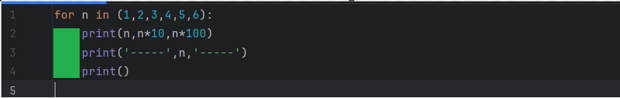

Generalidades
Vamos a exponer algunos aspectos generales sobre Python que resultan de vital importancia para poder escribir código en este lenguaje.
- Sensible a mayúsculas y minúsculas: Python es un lenguaje que diferencia entre mayúsculas y minúsculas, esto significa: For es diferente de for, nombre es diferente de Nombre, etc.
- Sintaxis: la sintaxis de Python es muy parecida al lenguaje natural o pseudocódigo, lo que hace que sea relativamente fácil de leer. Python no soporta el uso de $ ni hace falta terminar las líneas con ; como en otros lenguajes, y tampoco hay que usar {} en estructuras de control como en el if. Pero se puede usar el punto y coma ; para tener dos sentencias en la misma línea.
- Múltiples líneas: en algunas situaciones se puede dar el caso de que queramos tener una sola instrucción en varias línea de código. Uno de los motivos principales podría ser que fuera demasiado larga. Haciendo uso de \ se puede romper el código en varias líneas, lo que en determinados casos hace que el código sea mucho más legible.
- Bloques de código: hay determinadas instrucciones (for, while, id, elif, else, def, try, except) que tienen por objetivo ejecutar un conjunto de instrucciones que están relacionadas entre sí, a estas instrucciones se le llaman bloque de código. Las instrucciones que definen el comienzo del bloque de código, deben terminar en el carácter de los 2 puntos (:).
- Indentación: es la forma que tiene Python de realizar bloques de código. Se llama así una especie de sangría antes del texto que se establece para clarificar la escritura del código.
Veámoslo mejor con un ejemplo:

En la línea 1 se ha usado una instrucción que lleva implícita la ejecución de un bloque de código, por ese motivo esa instrucción finaliza en :
Las líneas 2, 3, y 4 forman el bloque de código asociado a la instrucción de la línea 1. Estas líneas están asociadas porque están desplazadas unos espacios hacia la derecha con respecto a la línea 1. Aunque no es obligatorio, se ha acordado que la indentación estándar sea de 4 espacios.
La indentación es una práctica habitual en la mayoría de lenguajes de programación porque mejora la lectura del código, es una buena forma de visualizar las líneas que están relacionadas entre sí y las que están incluidas, unas dentro de otras. Sin embargo, en Python es una regla para escribir el código, es decir, no existen otros caracteres para agrupar código, necesariamente hay que hacerlo a través de la indentación.